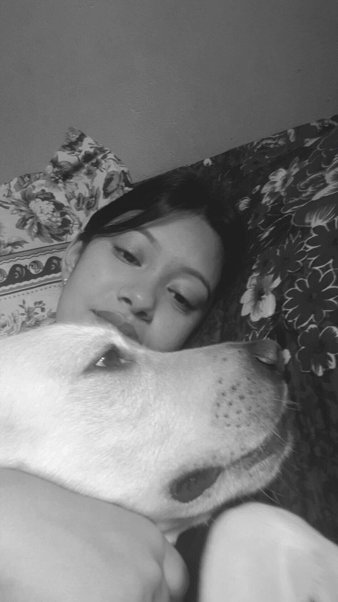

About Me & My Animal Journey 🐾
Hello! I’m a lifelong animal lover and nature enthusiast. From a young age, I’ve felt a special bond with animals—whether it was cuddling with my dog or quietly watching birds greet the morning sun. 🐶🦜
Over time, I’ve had the joy of meeting and caring for some amazing animal companions. Each one has brought something beautiful into my life—teaching me lessons about loyalty, patience, and the quiet magic of connection with the natural world.
My Animal Friends 🐾
- Snow – my loyal dog and walking buddy 🐕
- Dexter – the curious cat who always finds new hiding spots 😸
- Chunky – a parrot who loves to chat and sing 🎶
This site is a little window into my love for animals and how they’ve shaped who I am.